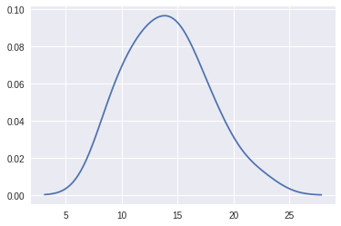
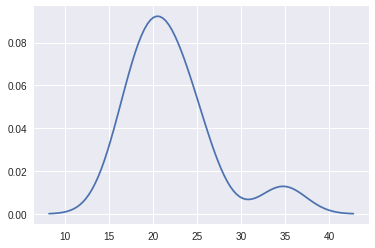

1)What is our independent variable? What is our dependent variable?
time taken to say the color is dependent and the congurent and incongurent will be independent
2)a.What is an appropriate set of hypotheses for this task?
-
- μC: mean of congurent
- μl: mean of incongurent
- H0(null hypothesis): μC == μl there is no significant time diffrence on finding color of the word
- H1(alternative hypothesis): μC<μl the time taken for incongruent is higher than congruent
2)b.What kind of statistical test do you expect to perform? Justify your choices.
we'll use z test when we having big dataset or a real population but here we having small dataset so we'll be using t test in this task
it is a dependent sample so we use paired or dependent t test
3)Report some descriptive statistics regarding this dataset. Include at least one measure of central tendency and at least one measure of variability.
congurent
- mean:14.05
- median:14.35
- mode:14.1092
- sample standard deviation: 3.55
- variance:12.14
- n:24
incongurent
- mean:22.01
- median:21.017
- mode:19.60
- sample standard deviation:4.79
- variance:22.05
- n:24
4)Provide one or two visualizations that show the distribution of the sample data. Write one or two sentences noting what you observe about the plot or plots.

congurent looks like normally distributed and having mean range between 14 to 15

incongurent looks like bimodal distribution
5)Now, perform the statistical test and report your results. What is your confidence level and your critical statistic value? Do you reject the null hypothesis or fail to reject it? Come to a conclusion in terms of the experiment task. Did the results match up with your expectations?
- mean diffrence: 7.96
- d:4.86
- SE=4.86/
√ 24
=0.99
- crtical value at alpha(0.05) is 1.71
- t stat value is 8.04
- DF:23
p value .00001 (so it is not likely by chance so changing color created huge impact on finding color)
- t stat value is greater than alpha value
- there is huge variation between t value and alpha so there is big time diffrence between incongurent and congurent condition
- reject H0(null hypothesis)
ps:kindly review and give me your feedback